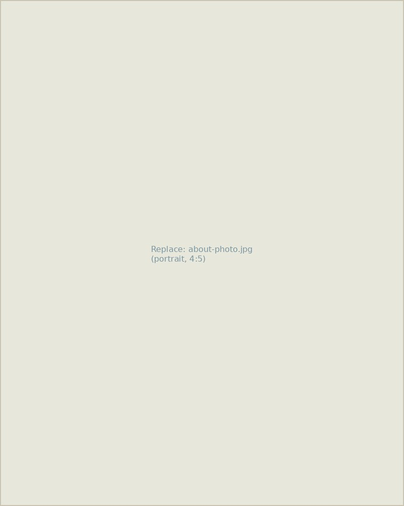
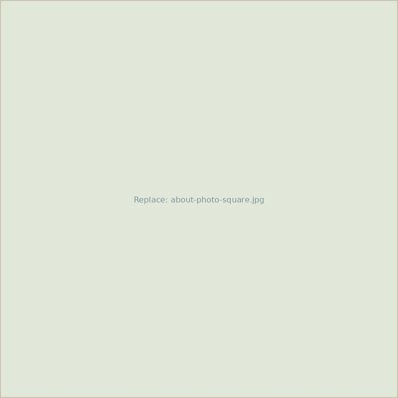

Answering applied conservation questions using statistics and data science tools.
I'm Martha Zillig, and I lead a research lab combining statistical ecology with field ornithology — building models that turn scattered observations into a clear picture of how bird populations move, persist, and respond to a changing landscape.


About the Lab
[Replace with your bio.] I'm a quantitative ecologist studying how bird populations respond to environmental change, using statistical models to connect individual movement and demography to landscape-scale patterns. My work sits at the intersection of field ornithology and data science — I spend as much time writing models in R as I do banding birds at dawn.
Before starting this lab, I [degree, institution, advisor]. My research has been supported by [funding sources], and I collaborate with [agencies / other labs]. Outside of research, I [hobbies — birding trips, illustration, hiking, etc.].
Research Areas
Population ecology, movement, and conservation — from individual birds to entire flyways.
Project Title One
One or two sentences describing this project — the species, the question, and why it matters.
Read more →Project Title Two
One or two sentences describing this project — the species, the question, and why it matters.
Read more →Project Title Three
One or two sentences describing this project — the species, the question, and why it matters.
Read more →